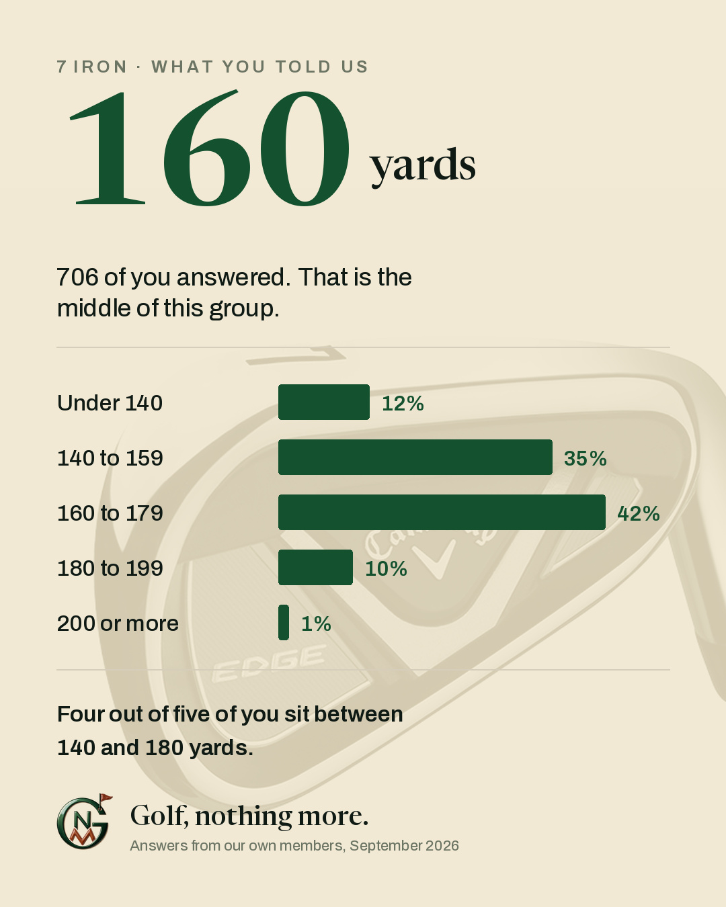
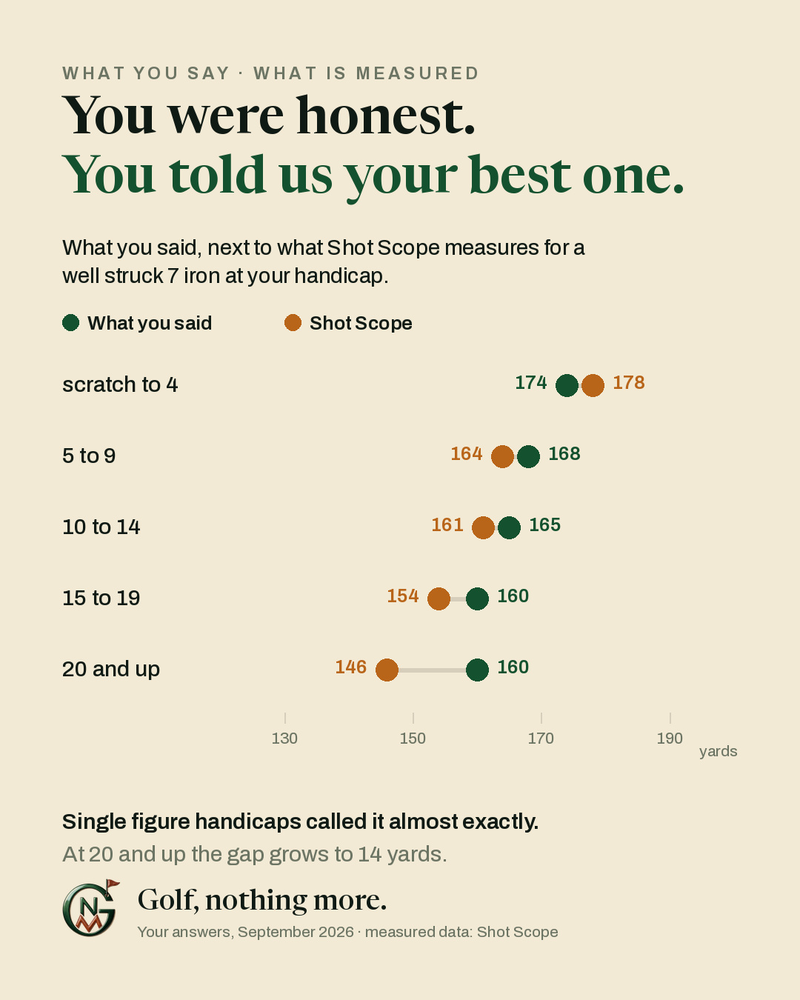
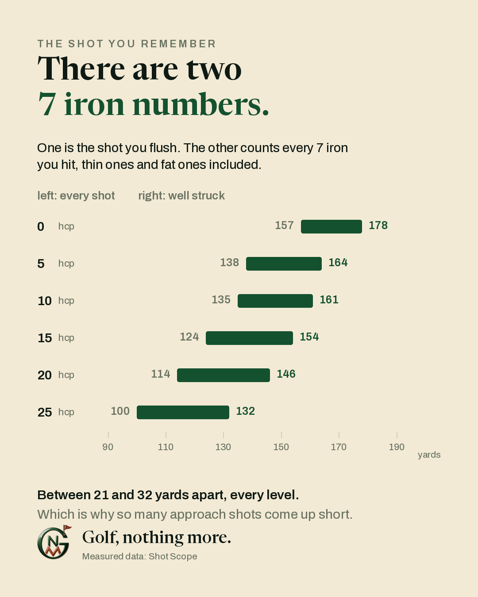

Shot Scope measured all of this. Our readers get 15% off with the code, and the link carries it for you.
Go to Shot Scope →
What you said
706 members gave a number. Not all of them in yards, so answers in metres were converted. Ranges were taken at their midpoint, jokes and one-liners were left out, and anyone who answered both posts is counted once.
| Distance | Members | Share | |
|---|---|---|---|
| Under 120 yards | 6 | 0.8% | |
| 120 to 139 | 77 | 10.9% | |
| 140 to 159 | 249 | 35.3% | |
| 160 to 179 | 297 | 42.1% | |
| 180 to 199 | 68 | 9.6% | |
| 200 or more | 9 | 1.3% |
Middle answer 160 yards, average 159. Lowest 100, highest 217. Four out of five members sit between 140 and 180.
What gets measured
176 members gave a handicap as well as a distance. That let us put their answers next to Shot Scope's measured data for a well struck 7 iron at the same handicap.

| Handicap | Members | You said | Shot Scope | Difference |
|---|---|---|---|---|
| scratch to 4 | 32 | 174 | 178 | −4 |
| 5 to 9 | 49 | 168 | 164 | +4 |
| 10 to 14 | 46 | 165 | 161 | +4 |
| 15 to 19 | 31 | 160 | 154 | +6 |
| 20 and up | 18 | 160 | 146 | +14 |
Nobody was lying. Single figure players called their own number to within four yards. The further up the handicap range you go, the more the gap opens, until at 20 and up it reaches fourteen yards.
And the thing almost nobody in the thread mentioned: handicap barely predicts distance at all. Of all the variation in how far our members hit a 7 iron, only about seven percent lines up with handicap. The rest is age, loft, altitude, wind and strike.
The two numbers
Here is where the 30 yards comes from. Shot Scope keeps two figures for every club. One is the shot you flush. The other counts every 7 iron you hit, thin ones, fat ones and the one that caught the tree.

| Handicap | Well struck | Every shot | Gap |
|---|---|---|---|
| 0 | 178 | 157 | 21 |
| 5 | 164 | 138 | 26 |
| 10 | 161 | 135 | 26 |
| 15 | 154 | 124 | 30 |
| 20 | 146 | 114 | 32 |
| 25 | 132 | 100 | 32 |
Every member who answered gave us the first number. Which makes sense, because that is the shot you remember. It also explains why so many approach shots finish short.
Want your own two numbers?
We did not measure any of this ourselves. The measured data on this page comes from Shot Scope, who track every shot their users hit and can tell you what your own 7 iron really does, not what you think it does.
They gave our members a discount. We earn a small commission when it is used, at no extra cost to you, and it does not change what is written above.
15% off everything at Shot Scope, for anyone reading this page. Enter the code at checkout, or follow the link and it travels with you.
We get four more codes out of other golf brands. Those go to our email list, at the bottom of this page.
How we counted
Two posts in the group, one asking for distance and one asking for distance and handicap. 466 members answered the first, 240 new members answered the second, and 26 answered both. Those 26 are counted once, which gives 706 people.
Answers in metres were converted to yards. A range like "150 to 160" was taken at 155. Answers that were a joke, a complaint, a score, or something like "as far as it needs to go" were left out, and so were answers that only described a situation rather than a distance. Where someone gave both a flushed number and a normal one, we took the normal one.
We use the middle answer rather than the average, because one person claiming 300 yards would drag an average and does not drag a middle. For the record the two barely differ here: 160 and 159.
This is what our members say, not a laboratory test. It is a large and honest sample of adult amateur golfers, and it should be read as that.
The other four codes
Shot Scope is one of five. The rest, a free lesson with a PGA professional among them, go to our email list: one email a month, plus a short note whenever a new code lands. Nothing at all in a quiet month.
Some offers earn us a commission. Unsubscribe any time. Privacy